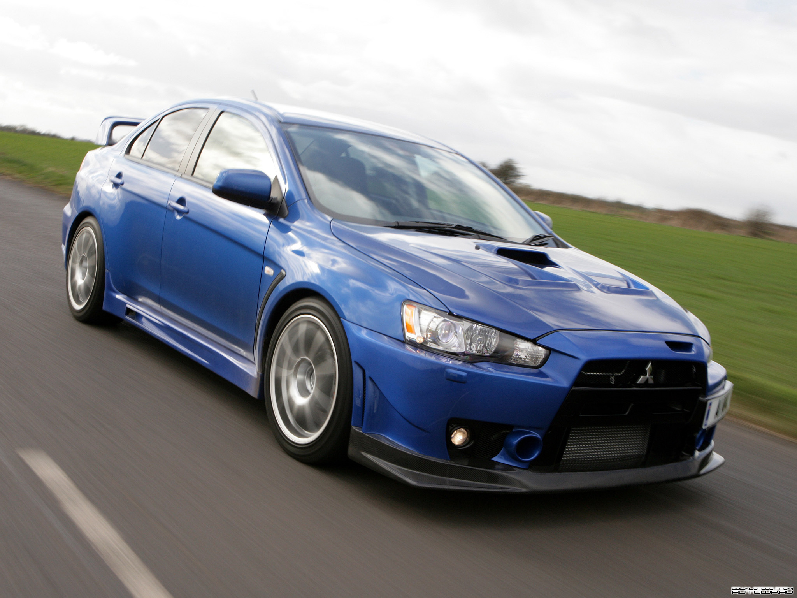

1. Mitsubishi Lancer Evolution 1 (1992-1994)
У 1992 році починається виробництво спортивної модифікації моделі Lancer, яка отримала назву Evolution.
Сьогодні, переживши вже не одну модернізацію, Lancer Evolution ділиться на покоління, кожне з яких
ідентифікується своїм римським числом. При створенні Evolution I компанія Mitsubishi Motors
використовувала найсміливіші та сучасні на той момент розробки. Автомобіль отримав повний привід і
двигун 2,0 л 4G63T оснащений турбонадувом з верхнім розташуванням двох розпредвалів (DOHC), що розвивав
потужність близько 250 к.с., який використовувався ще на Galant VR-4.
Кузов Lancer Evolution першого покоління мав посилені зварні шви і виготовлявся з
більш жорстких
матеріалів, що дозволило збільшити його жорсткість на 20%. Для забезпечення більш легкого ходу підвіски
деякі резинометалічні опори кріплення важелів були замінені на кульові опори. Алюмінієвий капот дозволив
зменшити загальну масу автомобіля до рекордних 1170 кг, у той час як передній і задній спойлери
дозволили поліпшити аеродинамічні характеристики кузова. Evo першого покоління був доступний у двох
версіях: GSR та RS. Метою створення автомобіля була участь у Чемпіонаті світу з ралі (World Rally
Championship). Автомобіль відразу ж набув популярності. Перше покоління Evo поклало початок славного
сімейства ралійних автомобілів Mitsubishi. Випуск Lancer Evolution I тривав з жовтня 1992 року по січень
1994 року.
2. Mitsubishi Lancer Evolution 2 (1994-1995)
Вже в 1993 році з'явився Lancer Evolution II. Автомобіль став трохи могутнішим за свого попередника.
Багато в чому за рахунок зниження протитиску системи випуску відпрацьованих газів потужність двигуна
зросла на 10 к.с. до 260 к.с. Друге покоління було засновано на тому ж шасі, що і перше, однак піддалося
допрацьованню, що дозволило втілити в ньому весь досвід експлуатації першого покоління в умовах ралійних
гонок. Основний акцент конструкторів полягав у поліпшенні керованості автомобіля. Була збільшена
жорсткість кузова і поліпшені аеродинамічні показники. У нижній частині переднього бампера з'явився
заспокоювач повітряного потоку, а додатковий аеродинамічний виступ («wicker») в задній частині антикрила
дозволив збільшити ефективність заднього спойлера. Для збільшення довжини ходу підвіски і оптимізації
керованості при проходженні поворотів була збільшена довжина важелів передньої підвіски і висота
передніх стійок. Серед візуальних вишукувань варто відзначити легкосплавні колісні диски OZ.
3. Mitsubishi Lancer Evolution 3 (1995-1996)
Січень 1995 року ознаменувався появою третього покоління Evolution. Екстер'єр став агресивнішим, ніж у
попередників, завдяки змінам в обваженні автомобіля. Попрацювали над аеродинамікою. Вдосконалений
передній спойлер, аеродинамічні накладки на пороги і збільшене заднє антикрило дозволили поліпшити
керованість автомобіля на високих швидкостях. Зміни в інтер'єрі Evolution III були обмежені тільки новим
спортивним кермом від Momo (тільки у версії GSR). Однак автомобіль змінився не тільки у візуальному
плані. Завдяки змінам конфігурації головки поршня, механіки Mitsubishi довели компресію в циліндрах до
9.0. Збільшили перетин компресорного виходу з 60 до 68 мм і знизили тиск в глушнику. Завдяки цим
технічним удосконаленням вдалося підняти потужність двигуна Evolution III до 270 к.с. при 6250 об / хв.
Тепер динаміка розгону від 0 до 60 миль досягала 4.9 секунд. Обидві версії Mitsubishi Lancer Evolution
III - GSR та RS, як і раніше, оснащені п'ятиступінчастою механічною КПП.
У 1996 році пілот Томі Мякінен завоював на Evolution III свій перший чемпіонський титул і приніс концерну
Mitshubishi друге місце в Кубку Конструкторів. Всі ці перемоги сприяли закріпленню за автомобілем іміджу
одного із найспортивніших серійних седанів у світі.
4. Mitsubishi Lancer Evolution 4 (1996-1998)

У серпні 1996 року почали випускати Lancer Evolution IV. Цей автомобіль був
сконструйований вже на
абсолютно новій платформі - CN9A. Четверте покоління можна відрізнити за переднім бампером з двома
значними протитуманками PIAA і величезному повітрозабірнику. Кришка капота значно відрізняється від
кришок попередників, вона отримала пару повітрозабірників - великий у центрі і маленький з правого боку.
Задній спойлер автомобіля Mitsubishi Lancer Evolution IV вражає не тільки своїм розміром, а й формою.
Підставка виконано у формі трикутника і покриває велику частину кришки багажника.
Під капотом вдосконалена модифікація дволітрового чотирициліндрового двигуна 4G63. Доробки торкнулися
часові характеристики спрацьовування клапанів. Крім цього, самі клапана були полегшені, а двигун отримав
ефективніший турбонагнітач. Всі зазначені заходи дозволили довести потужність дволітрового двигуна до
280 к.с. при 6500 об / хв. Автомобіль міг комплектуватися п'ятишвидкісною коробкою передач з близькими
(close ratio) або надзвичайно близькими (super-close ratio) передавальними числами.
Удосконаленню піддалася і трансмісія. Зокрема, задній диференціал став оснащуватися активною системою
підтримки курсової стійкості (Active Yaw Control), а як передній диференціал став використовуватися
адаптивний до передавального моменту, що крутить самоблокуючий (LSD) диференціал з косозубою зубчастою
передачею. Така трансмісія дозволила шляхом управління прослизанням коліс поліпшити стабільність
траєкторії автомобіля при проходженні поворотів.
Спочатку в продаж надійшло 6000 автомобілів. Однак попит був настільки великий, що, поступаючись
наполегливим вимогам споживачів, фірма додатково випустила ще 3000 машин. Виробництво Mitsubishi Lancer
Evolution IV тривало аж до січня 1998 року.
5. Mitsubishi Lancer Evolution 5 (1998-1999)
У 1998 році настала черга п'ятого покоління Lancer Evolution. В основі автомобіля нова платформа CP9A.
Від попередника його відрізняє більш «мускулиста» зовнішність. Передній спойлер не тільки додав
зовнішності агресивності, але і дозволив поліпшити ефективність роботи системи охолодження двигуна і
охолоджувача надувного повітря. В результаті збільшення ширини передніх і задніх коліс алюмінієві крила
отримали виступаючі дуги колісних арок. Успадковане від попередніх поколінь високе антикрило стало
регульованим, що дозволило налаштовувати розвивається їм притискне зусилля. Змінам піддалися і передні
фари, які отримали сучаснішу форму. Кришку капота прикрашали два великих повітрозабірника по центру і
один невеликий ліворуч. Зміни в технічному плані забезпечили Evolution V потужність в 276 кінських сил.
Спершу, Lancer Evolution був призначений тільки для японського ринку, але через бурхливий інтерес, з 1998
року дрібними партіями Evo п'ятого і шостого покоління експортувалися у Велику Британію та інші країни
Європи. Автомобіль став легендою. Зрідка викидаються на ринок обмежені партії придатних для експлуатації
на дорогах загального користування Lancer Evolution розкуповувалися відразу ж після анонсування і
оплачувалися майбутніми власниками за довгі місяці до їх реального випуску. Evo V випускався рівно рік,
до січня 1999 року.
6. Mitsubishi Lancer Evolution 6 (1999-2001)
У 1999 році з'явилася повноприводна версія Evo VI. У стандартне оснащення ввійшли спортивні передні
сидіння Recaro, ABS і система стабілізації курсової стійкості. Створюючи шосте покоління, конструктори
сконцентрувалися на удосконаленні системи охолодження і живучості двигуна. Автомобіль отримав
серйозніший інтеркулер, маслоохолоджувач і нові поршні, разом з титано-алюмінідним робочим колесом
турбіни для моделі RS. Нововведення торкнулися і зовнішності автомобіля. Екстер'єр Evolution VI
відрізняють модифіковані бампери. Протитуманні фари були збільшені в розмірі і зрушені до кутів бампера
для якіснішого освітлення.Поряд з базовою моделлю, випускалася лімітована серія RS Sprint, допрацьована
ательє Ralliart в Англії.
Потужність Mitsubishi Lancer Evolution VI RS Sprint досягала 330 к.с.
Обмежена партія автомобілів Lancer Evolution VI була випущена під назвою Tommi Makinen Edition (на честь
фінського автогонщика фірмової команди Mitsubishi Ralliart Томмі Мякинена), який у 1999 році встановив
рекорд, вигравши Чемпіонат світу з ралі четвертий раз поспіль. Ця версія відрізнялася від звичайних Evo
VI іншим аеродинамічним обвісом, ексклюзивним спортивним інтер'єром з червоно-чорними сидіннями Recaro і
кермом MOMO, а також забарвленням, яке повторювало кольори гоночного автомобіля і 17-дюймовими дисками
ENKEI білого кольору. Крім цього, модифікація Tommi Makinen оснащувалася більш жорсткою і низькою
підвіскою, чуйнішим рульовим керуванням і мала знижений центр ваги.
Випуск Evolution VI продовжував до березня 2001 року, коли його змінив Evolution VII.
7. Mitsubishi Lancer Evolution 7 (2001-2003)
Сьоме покоління було сконструйовано на базі більш великого автомобіля Lancer Cedia. Воно увібрало в себе
велику кількість різних еволюційних механічних удосконалень і отримало повністю оновлений кузов з
подовженою колісною базою, тим самим вийшовши на нові рівні динаміки і технічної досконалості.
Автомобіль відрізнявся повністю новим аеродинамічним обвісом з плавними обводами, а також вдосконаленою
трансмісією, оснащеною допрацьованими версіями електронних систем розподілу крутного моменту і
управління зчепленням коліс з дорогою. Добре зарекомендував себе 2-літровий двигун з кодом 4G63, який
був доопрацьований з метою забезпечення близького до максимального крутного моменту практично у всьому
діапазоні частот обертання колінчастого валу двигуна. Доповнений турбонадувом силовий агрегат видавав
потужність в 281 к.с.
Поліпшення керованості в автомобілях сьомого покоління багато в чому пояснюється підвищеною на 50% в
порівнянні з попереднім поколінням жорсткістю кузова цього автомобіля. Крім того, на Lancer Evolution
VII почали встановлювати новий активний міжосьовий диференціал - ACD (Active Center Differential).
Система стежить за різницею швидкості обертання задніх і передніх коліс за допомогою багатодискової
муфти з електронним управлінням. Вона підтримує нормальне зчеплення провідних коліс з дорогою при їзді в
режимі 4WD, так, щоб при цьому не страждала керованість машини. Крім автоматичного режиму розподілу
крутного моменту передбачена і можливість примусового вибору трьох можливих режимів роботи міжосьового
диференціала в залежності від типу дорожнього покриття - Tarmac (асфальт), Gravel (гравій) і Snow
(сніг). Для модифікації GSR така можливість була включена в стандартну комплектацію, а для модифікації
RS вона пропонувалася як опція. Система контролю відхилення від курсу AYC (Active Yaw Control system)
стала працювати набагато природніше, ніж у Lancer Evolution IV, де вона вперше була застосована. Причому
у сьомого покоління системи ACD і AYC виявилися інтегровані один в одного.
У 2002 році в Японії почалися продажі Evolution VII GT-A з автоматичною коробкою передач. Це перший в
історії серії Lancer Evolution автомобіль із гідромеханічною трансмісією. 5-ступінчаста коробка
INVECS-II Sport-Mode, запозичена у моделі Galant VR-4, мала і ручний режим керування. Правда, щоб
агрегатувати КПП з 2-х літровим турбомотором його потужність довелося трохи знизити (з 280 до 272 к.с.).
В іншому це звичайний Evolution VII. Ті ж масивні бампери з повітрозабірниками і спойлерами, антикрило
на кришці багажника, гальмівні механізми Brembo. Як і топ-версія GSR, GT-A комплектувалася
легкосплавними колісними дисками і низькопрофільними шинами розмірністю 225/45 R17.
8. Mitsubishi Lancer Evolution 8 (2003-2005)

Багато елементів конструкції Evolution VII GT-A були запозичені у розробці восьмого покоління Lancer
Evolution, випущеного в січні 2003 року. Автомобіль одержав інший дизайн кузова, який відрізняється
новим оформленням передньої частини. З'явився великий повітрозабірник у передньому бампері, що
забезпечує кращий приплив повітря до інтеркулеру, а також нові ґрати радіатора. Крім естетичної краси,
Lancer Evolution VIII відрізняється ще й поліпшеною аеродинамікою. Примітно, що він на 80 міліметрів
довший за свого попередника. Крім цього, Lancer Evolution VIII отримав нову конструкцію переднього і
заднього бампера, яка дозволила підвищити безпеку водія і пасажирів у разі аварії, а також оснащується
більш містким бензобаком і потужнішою акумуляторною батареєю.
Evolution VIII позбувся електронної системи повного приводу і оснащується звичнішою з
центральним
блокуванням диференціала, а також вязкісною муфтою, що розподіляє тягу між передньою і задньою віссю.
Під стать двигуну і гальмівна система, де застосовані 17-дюймові гальмівні диски спереду і 16-дюймові
ззаду. Крім того, можна відзначити, що Mitsubishi вперше у своїй історії зробила Lancer Evo VIII не
тільки у вигляді седана, але і як універсал.
Призначений для японського ринку, автомобіль мав двигун в 280 к.с., а от для Європи з міркувань екології
його потужність понизили до 265 к.с. Evolution VIII став першим поколінням Lancer Evolution, продаваним
в США. Проте багато компонентів американської версії були значно урізані порівняно з японською.
Наприклад, американський Evo VIII був обділений найзначнішою особливістю Mitsubishi Lancer Evolution
VIII - трансмісією Super Active Yaw Control.
9. Mitsubishi Lancer Evolution 9 (2005-2007)
У березні 2005 року побачив світ Lancer Evo IX. Автомобіль зосередив у собі всі переваги
попередніх
поколінь Evo і ще ряд удосконалень. Як і попередня модифікація, Evo IX виступила в трьох іпостасіях:
«стандарт», RS і MR. Дволітровий двигун 4G63 отримав вдосконалену систему управління фазами
газорозподілу і допрацьований турбокомпресор. Динаміка розгону до 100 км/год становить 5,7 секунди, а
максимальна швидкість - 250 км/год. Комплектації «стандарт» і RS отримали п'ятиступінчасті механічні
коробки передач, у той час як MR оснастили шестиступінчастою ручною коробкою. Підвіска була доступна у
двох варіантах: амортизатори Kayaba (з литими дисками Enkei) або Bilstein (з кованими дисками BBS).
Новий дизайн передньої частини кузова поліпшив аеродинаміку й охолодження двигуна. У задньому бампері
з'явився чорний дифузор, покликаний збільшити швидкість потоку, що виходить з-під днища, і, таким чином,
підвищити притискну силу. Алюмінієвий дах та алюмінієві енергопоглинаючі балки в дверях сприяли зниженню
ваги автомобіля на 7,5 кг, що дозволило знизити центр ваги і поліпшити стійкість і точність управління.
Додалися нові опції і в інтер'єрі. З'явилися деякі удосконалення в плані комфорту. Клімат-контроль
змінив кондиціонер, а оббивка сидінь в Evo IX зроблена з шкіри і алькантари від Recaro.
10. Mitsubishi Lancer Evolution 10 (2007-2015)

Офіційна світова прем'єра десятого покоління Evo відбулася у вересні 2007 року в рамках Франкфуртського
автосалону. Evolution X побудований на платформі звичайного Lancer, оснащується спортивною підвіскою з
системою повного приводу Super All Wheel Control (S-AWC3), а також активним центральним і заднім
диференціалом. Система повного приводу об'єднує неперевершений рівень розподілу обертального моменту
двигуна і управління гальмами, робить Lancer Evolution X найкращим транспортним засобом у своєму класі.
В Evolution X рестайлінг 10 покоління приніс високотемпературну турбіну, новий проміжний охолоджувач,
новий карданний вал і клапани двигуна, зміну, завдяки якій «маленький» 2,0 л 4B11T MIVEC3 (Mitsubishi
Innovative Valve timing and lift Electronic Control System) з алюмінієвим блоком циліндрів (це дозволило
значно знизити вагу силового агрегату) виробляє колосальні 403 кінські сили, а крутний момент 550 нм
доступний від 3500 об/хв до 7700. Зміни в 4B11T MIVEC3 зробили можливими розгін з 0 до 100 км/год за 3,8
секунди.
Електроніка з системою S-AWC керує контролем зчеплення з дорогою на будь-якій дорозі (AWC це як описує
Mitsubishi Філософія повного приводу з активним використанням тяги для поліпшення керованості машини та
збереження контролю за її поведінкою в будь-яких ситуаціях.) Клавіша 4WD на центральному тунелі в
машинах з S-AWC приховує кілька режимів: AWC eco (передній привід із підключенням задньої осі), Normal
(повний привід з розподілом тяги по осях), Snow (той самий Normal, але з акцентом на слизьке покриття
під колесами) та Lock (заблокована муфта).
До бази седана входять: вікна та дзеркала з електроприводом, підігрів сидінь, клімат-контроль, функція
відмикання дверей без ключа, передні сидіння Recaro, камера заднього виду, 7-дюймовий кольоровий
сенсорний екран з AM/FM/CD/USB, функція підключення телефону через Bluetooth та елементи управління
аудіо системою на рульовому колесі. Стандартними елементами безпеки є: антиблокувальна гальмівна
система, електронний розподіл гальмівного зусилля, функція допомоги при гальмуванні, протибуксувальна
система, контроль стабільності та сім подушок безпеки.